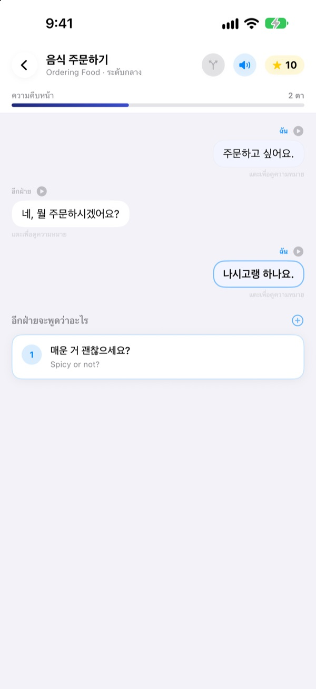
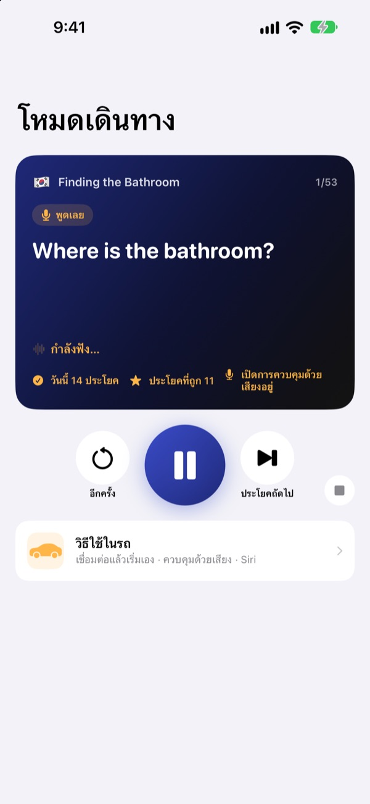
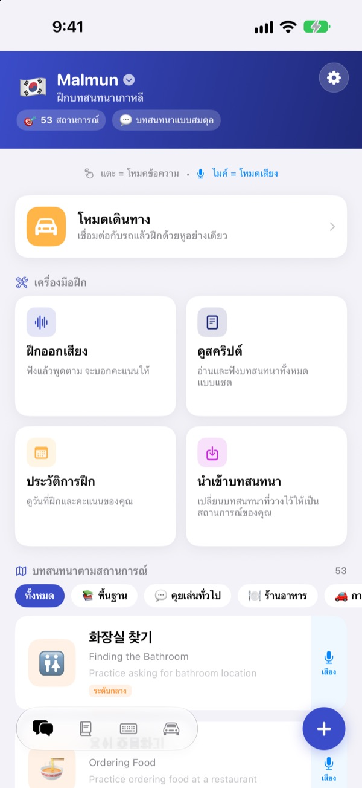
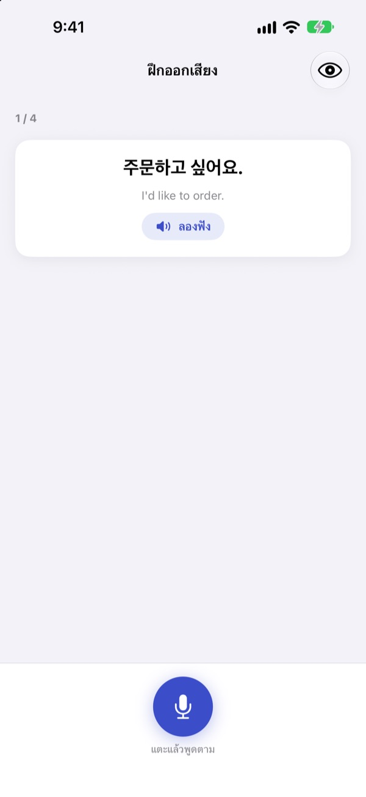

เลิกพูดไม่ออก
เป็นฝ่ายเริ่มก่อน
Malmun คือแอปฝึกบทสนทนาที่ทุกคำตอบที่คุณเลือกจะพาบทสนทนาไปคนละทาง เลือกเรียนภาษาเกาหลี ญี่ปุ่น จีน สเปน หรืออินโดนีเซีย และเวลาอยู่บนรถก็ฝึกได้ด้วยหูกับเสียงอย่างเดียว
บทสนทนาแบบแตกแขนง ฝึกออกเสียง และคำศัพท์ ใช้ได้ฟรี

ลองต่อบทสนทนาด้วยตัวเอง
นี่คือบทสนทนาภาษาอินโดนีเซีย “ทักทายตอนเช้า” จากในแอปจริง ทุกประโยคที่คุณเลือกจะพาบทสนทนาไปอีกทาง
จำประโยคได้ แต่พอถึงตอนต้องตอบกลับนึกไม่ออก?
ในหนังสือ บทสนทนาเป็นไปตามบททุกครั้ง แต่ในชีวิตจริง อีกฝ่ายมักตอบสิ่งที่คุณไม่ได้คาดไว้ Malmun ให้คุณเดินผ่านทุกทางแยกของบทสนทนาไว้ก่อน ไม่ว่าอีกฝ่ายจะพูดอะไร ประโยคถัดไปก็พร้อมแล้ว แม้แต่ทางกลับบ้านก็กลายเป็นเวลาฝึก
ฝึกด้วยหูระหว่างขับรถ
โหมดเดินทางเล่นผ่านลำโพงรถด้วย Bluetooth หรือ CarPlay คุณจะได้ยินความหมายก่อน เสียงสัญญาณจะเว้นเวลาให้คุณพูดเอง แล้วคำตอบจะเล่นช้าหนึ่งรอบและความเร็วปกติอีกหนึ่งรอบ
ข้ามและฟังซ้ำได้ด้วยปุ่มบนพวงมาลัย หรือพูด next, again, slower เมื่อถึงตาคุณ และจะหยุดชั่วคราวเมื่อระบบนำทางพูด

ครบทุกสถานการณ์ทั้งเที่ยวและชีวิตประจำวัน
ทุกภาษามีบทสนทนาตามสถานการณ์ 53 บท ตั้งแต่ประโยคพื้นฐาน คุยเล่นทั่วไป ร้านอาหาร การเดินทาง สนามบิน โรงแรม ช้อปปิ้ง เที่ยวชม ไปจนถึงเหตุฉุกเฉิน
ถ้าเรียนภาษาอินโดนีเซียจะมีเพิ่มอีก ทั้งบทคุยเล่นที่เขียนเอง 5 บท คอร์สหนึ่งวัน 3 คอร์ส คอร์สละ 6 ฉากพร้อมตารางรายสัปดาห์ และคำศัพท์สำหรับไปทำงานต่างประเทศ 100 คำ

เช็กว่าพูดถูกหรือเปล่า
ฝึกออกเสียงจะให้คะแนน และใช้สีบอกคำที่พูดถูกกับคำที่พลาดไป
ในหน้าดูสคริปต์ บทสนทนาทั้งหมดจะแสดงเหมือนแชต ฟังรวดเดียวจบ หรือซ่อนความหมายไว้ทดสอบตัวเองก็ได้

เริ่มได้ในสามขั้นตอน
- 1
เลือกภาษา
แตะธงด้านบนสุดของหน้าหลัก ประโยคและคำศัพท์จะบันทึกแยกตามภาษา
- 2
เปิดบทสนทนา
แตะคำตอบในโหมดข้อความ หรือแตะไมโครโฟนแล้วพูด โหมดเสียงจะหาคำตอบที่ใกล้ที่สุดให้
- 3
บนรถใช้โหมดเดินทาง
เชื่อมต่อ iPhone กับรถแล้วกดเล่น ไม่ต้องมองหน้าจอ
การควบคุมโหมดเดินทาง
- พวงมาลัย: เพลงถัดไป
- ประโยคถัดไป
- พวงมาลัย: เพลงก่อนหน้า
- ประโยคเดิมอีกครั้ง
- ปุ่มเล่น
- หยุดชั่วคราวและเล่นต่อ
next·skip- ประโยคถัดไป
again·repeat- ฟังอีกครั้ง
slower·faster- ปรับความเร็วการอ่าน
next scene- ไปบทสนทนาถัดไป
stop·pause- เลิกฝึก
- บอก Siri ว่า “เริ่มฝึกระหว่างเดินทางใน Malmun”
- เริ่มโดยไม่ต้องแตะ iPhone
เมื่อแอปใช้ภาษาไทย ให้พูดคำสั่งเสียงเป็นภาษาอังกฤษ คำสั่งจะถูกฟังเฉพาะตอนถึงตาคุณหลังเสียงสัญญาณ ประโยคที่กำลังเล่นจะแสดงในข้อมูลการเล่นบนหน้าจอรถ CarPlay ไม่มีหน้าจอแอปแยก
เกือบทุกอย่างใช้ฟรี Malmun Pro ปลดล็อกส่วนที่เหลือ
ฟรี
- คุยเล่นแบบแตกแขนงและคอร์สหนึ่งวัน (ภาษาอินโดนีเซีย)
- บทสนทนาตามสถานการณ์: ประโยคพื้นฐานและคุยเล่นทั่วไป
- โหมดเดินทาง วันละ 3 ฉาก
- ฝึกออกเสียง ดูสคริปต์ นำเข้าบทสนทนา ประวัติการฝึก
- ประโยคของฉัน บัตรคำศัพท์ คีย์บอร์ดประโยค
- แชร์บทสนทนากับเพื่อน สร้างบทสนทนาด้วย AI
Malmun Pro
- บทสนทนาตามสถานการณ์ทั้งหมด: ร้านอาหาร การเดินทาง สนามบิน โรงแรม ช้อปปิ้ง เที่ยวชม เหตุฉุกเฉิน
- โหมดเดินทางไม่จำกัด
- ใช้ได้กับทุกภาษา
สมัครรายปี หรือซื้อครั้งเดียวใช้ได้ตลอด
ดูราคาได้ในแอปและบน App Store การสมัครรายปีจะต่ออายุอัตโนมัติ เว้นแต่ยกเลิกอย่างน้อย 24 ชั่วโมงก่อนสิ้นสุดรอบ
คำถามที่พบบ่อย
เรียนภาษาอะไรได้บ้าง
ภาษาเกาหลี ญี่ปุ่น จีน สเปน และอินโดนีเซีย ปุ่มและเมนูเป็นภาษาไทย แต่ความหมายของประโยคและคำสั่งเสียงเป็นภาษาอังกฤษ ภาษาอังกฤษจึงไม่อยู่ในรายการให้เลือกเรียน
ใช้บนรถอย่างไร
เชื่อมต่อ iPhone กับรถผ่าน Bluetooth หรือ CarPlay เปิดโหมดเดินทางแล้วกดเล่น เสียงจะออกทางลำโพงรถ และประโยคที่กำลังเล่นจะแสดงใน “กำลังเล่น” จะบอก Siri ว่า “เริ่มฝึกระหว่างเดินทางใน Malmun” ก็ได้ หรือตั้งค่าอัตโนมัติในแอปคำสั่งลัดไว้ครั้งเดียว ให้เริ่มทันทีที่เชื่อมต่อ CarPlay (หรือ Bluetooth ของรถ)
ไมโครโฟนฟังตลอดเวลาไหม
ไม่ ไมโครโฟนของ iPhone จะฟังเฉพาะตอนถึงตาคุณหลังเสียงสัญญาณ และสิ่งที่ได้ยินจะประมวลผลบนเครื่องเท่านั้น
แอปจับการออกเสียงไม่ค่อยได้
การรู้จำเสียงทำงานในภาษาที่คุณกำลังเรียน ลองฝึกในที่เงียบกว่านี้ และตรวจดูว่าได้ดาวน์โหลดการรู้จำเสียงของภาษานั้นไว้ในเครื่องแล้ว
เพิ่มคีย์บอร์ดอย่างไร
ไปที่ การตั้งค่า ▸ ทั่วไป ▸ แป้นพิมพ์ ▸ แป้นพิมพ์ ▸ เพิ่มแป้นพิมพ์ใหม่ แล้วเลือกคีย์บอร์ด Malmun ระหว่างพิมพ์ให้แตะปุ่มลูกโลกเพื่อสลับ ไม่ต้องเปิดการเข้าถึงแบบเต็ม ถ้าอยากให้แสดงประโยคน้อยลง ให้แตะไอคอนคีย์บอร์ดมุมขวาล่างของหน้าหลัก ▸ จัดการคีย์บอร์ด
ไม่เห็นบทสนทนาที่เพื่อนแชร์มา
การแชร์กับเพื่อนทำงานผ่าน iCloud ทั้งสองคนจึงต้องลงชื่อเข้า iCloud ถ้ายังไม่เห็น ให้ปิดแอปให้สนิทแล้วเปิดใหม่
ต้องใช้อะไรบ้างถึงจะสร้างบทสนทนาด้วย AI ได้
ใส่คีย์ API ของ Anthropic ของคุณเองในแอปแล้วพิมพ์หัวข้อ แอปจะสร้างบทสนทนาใหม่ให้ ฟีเจอร์อื่นทั้งหมดใช้ได้แม้ไม่มีคีย์
ยกเลิกการสมัครหรือขอเงินคืนอย่างไร
การชำระเงินดำเนินการโดย Apple ยกเลิกได้ที่ การตั้งค่า iPhone ▸ บัญชี Apple ▸ การสมัครรับ ▸ Malmun ส่วนการขอเงินคืนให้ส่งคำขอถึง Apple ที่ reportaproblem.apple.com
เปลี่ยน iPhone แล้ว Pro หายไป
ลงชื่อเข้าด้วยบัญชี Apple เดิม แล้วใน Malmun แตะ การตั้งค่า ▸ Malmun Pro ▸ กู้คืนการซื้อ
ความคืบหน้าในการเรียนเก็บไว้ที่ไหน
ไม่ต้องมีบัญชี ข้อมูลอยู่ในเครื่องและใน iCloud ของคุณเอง ไม่มีโฆษณาและไม่ติดตาม ส่งเพียงสถิติการใช้งานแบบไม่ระบุตัวตนและรายงานข้อผิดพลาดเท่านั้น แจ้งบั๊กหรือขอฟีเจอร์ได้ที่ GitHub Issues (github.com/M1zz/IndonesianSmallTalk/issues) ด้วย
มีคำถามหรือข้อเสนอแนะ เขียนถึงเราได้ที่ leeo@kakao.com ผ่าน การตั้งค่า ▸ ส่งความคิดเห็น ในแอป หรือทาง Instagram @lee25_ios